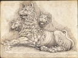

Forums galactiques > Taverne galactique : lieu de discussion informel > Un peu de paix dans ce monde de brutes!
Pages : 1 2
| Charlotte Réputation à la taverne : 135  28/06 ETU 09:57 | Score : 4 Détails S'il reste une planète de libre je voudrais bien l'acquérir. Enfin, en espérant que cela ne dérange personne.
| ||
| Ju Réputation à la taverne : 824 28/06 ETU 15:04  | Score : 5 Détails Effectivement, Ju trouva la reserve d'alcool bien rangée derrière la porte du cellier...
Exité par cette "fantastique aventure" et par l'apéro... surtout par l'apéro, il passa les deux premières heures à boire... ... Quelques heures plus tard, en plein délire, il appuya sur le boutton rouge, non pas celui des bhas mais celui des communications d'urgence intrasystémique. Appel à tout les commandants.... Urgence... Alerte niveau 1... Communication établie... -Hey, les gens!!!!! burp J'ai une super idée méga chouette qui déchire la mort!!!! Et si on prenait des yaourts vides qu'on relie par des fils creux entre les planètes pour pouvoir communiquer discretement!!?? burp euh... vous reste quekchose à buver chez toi?Hips Silence soudain... Ju venait de tomber dans un coma de quelques heures... Pas facile la collocation hein???^^ | ||
| John Quick Réputation à la taverne : 536  28/06 ETU 15:29 | Score : 6 Détails 101010 1 01010 101010 11111 01000 0000000000 10 0000000110100 1010111111111111110 101 01 0101101010 1 01010 101010 11111 01000 0000000000 10 0000000110100 1010111111111111110 101 01 0101101010 1 01010 101010 11111 01000 0000000000 10 0000000110100 1010111111111111110 101 01 0101101010 1 01010 101010 11111 01000 0000000000 10 0000000110100 1010111111111111110 101 01 0101101010 1 01010 101010 11111 01000 0000000000 10 0000000110100 1010111111111111110 101 01 0101101010 1 01010 101010 11111 01000 0000000000 10 0000000110100 1010111111111111110 101 01 0101101010 1 01010 101010 11111 01000 0000000000 10 0000000110100 1010111111111111110 101 01 0101101010 1 01010 101010 11111 01000 0000000000 10 0000000110100 1010111111111111110 101 01 0101101010 1 01010 101010 11111 01000 0000000000 10 0000000110100 1010111111111111110 101 01 0101101010 1 01010 101010 11111 01000 0000000000 10 0000000110100 1010111111111111110 101 01 0101101010 1 01010 101010 11111 01000 0000000000 10 0000000110100 1010111111111111110 101 01 0101101010 1 01010 101010 11111 01000 0000000000 10 0000000110100 1010111111111111110 101 01 0101101010 1 01010 101010 11111 01000 0000000000 10 0000000110100 1010111111111111110 101 01 0101101010 1 01010 101010 11111 01000 0000000000 10 0000000110100 1010111111111111110 101 01 0101101010 1 01010 101010 11111 01000 0000000000 10 0000000110100 1010111111111111110 101 01 0101101010 1 01010 101010 11111 01000 0000000000 10 0000000110100 1010111111111111110 101 01 0101
Oye à vous tous, prétendants au voisinage Point Le Robocrate aimerait moultement (et avec moultitude) participer à ce vaste projet de rencontre entre culture (et plus si affinité) Point Le Robocrate vous fait savoir également qu'en cas de présence dans ce système, il mettra à disposition de son premier visiteur une demi douzaine de dames de la Sororité de Vigma Point Contrat entièrement au frais de la Robocratie Point Nous pourrions 1010010 10 10 101011111 01 01 0 101 Dans le cul! Dans le cul! 10101 01 010 10 1 01 également penser à un immense apéritif entre commandants de ce système, où les Soeurs seraient en effectif plus conséquent et munies d'un entrain à la chaleur sans équivoque Point Ce genre de rassemblement amical typiquement humain porte un nom bien précis qui malheureusement nous échappe pour l'instant Point Que vos journées soient 1010010 10 10 101011111 01 01 0 101 Céllulite! Céllulite! 10101 01 010 10 1 01 longues, vos nuits agréables et notre rencontre à la hauteur de nos communes attentes Point Point Point Homme-commandant Vlad, nous sommes certains que nous trouverons un présent digne d'honorer votre initiative Point Pour le Robocrate de Flash, l'unité secrétaire Robert Turbo Point 101010 1 01010 101010 11111 01000 0000000000 10 0000000110100 1010111111111111110 101 01 0101101010 1 01010 101010 11111 01000 0000000000 10 0000000110100 1010111111111111110 101 01 0101101010 1 01010 101010 11111 01000 0000000000 10 0000000110100 1010111111111111110 101 01 0101101010 1 01010 101010 11111 01000 0000000000 10 0000000110100 1010111111111111110 101 01 0101 | ||
| Acanith Réputation à la taverne : 1200  28/06 ETU 17:04 | Score : 3 Détails Hum... interessant ce plan des ficelles... on arrête pas le progrès!
Mais Ju, comment faire passer les bouteilles d'alcool via le pot de yahourts? Pour ce qui est de l'apero, on vient d'installer tout un tas de jolis labos sur notre toute nouvelle planète. Et entre un labo de chimie et une distillerie, la différence est pas énorme... | ||
| Bephera Réputation à la taverne : 174  28/06 ETU 18:27 | Score : 2 Détails L'elfe, qui venait tout juste de sortir de son coma, voulut se mettre au courant des dernières nouvelles. Une tierce personne lui parla du projet de l'imminent Vald... Un système prônant la paix! Si ce n’est pas magnifique ça ?!
Un système ou règne paix et alco…euh amour ! JAH ! Je signe où ? | ||
| vlad Réputation à la taverne : 411  28/06 ETU 18:35 | Score : 5 Détails Chers amis le système de l'amitié est désormais complet. Je suis content que cela ce soit si bien passé et aussi rapidement.
Comme je l'ai dit si d'autres commandants veulent s'inscrirent j'ai d'autres systèmes en réserves. Les derniers commandants sont en route. A leur arrivée je souhaite organiser une énorme fête ou chacun de vous devra ramener une ou plusieurs spécialités de son peuple. Des Terralitres d'alcool et de néctar sont déjà en route à l'approche de cette beuv...euh inoguration du premier système de l'amitié. "On n'apprend pas l'amour. Il existe. On n'apprend pas davantage l'amitié." | ||
| Charlotte Réputation à la taverne : 135 28/06 ETU 18:55 | Score : 3 Détails Merci bien de ce système vlad.
Si jamais un de mes voisins osuhaiterait me rendre visite, il est libre de le faire. Mes portes seront toujours ouvertes! Parcontre, je n'ai que de la bière et du whisky à amener. Rien d'autre n'arrive à être fabriqué sur ma planète. | ||
| NojaH Corporation Réputation à la taverne : 205  28/06 ETU 19:10 | Score : 7 Détails
Si c'est pas déplorant de voir une si jolie fille se détruire avec l'alcool... Après elle ressemblera a Métamorphosis sisi : peau craquelée dent jaunes qui tombent... Oula je crois qu'elle m'a entendue je fais faire un tour dans une autre galaxie moi.... | ||
| La TV Réputation à la taverne : 118 28/06 ETU 19:17 | Score : 3 Détails Tranmission...
Canal :systéme de la paix. Une télé malheuresement ne bois pas ,elle recoit du courant. Et nous ne pouvons pas non plus manger,notre nourriture sont les puces et les mémoires qu'on nous injecte dans notre mémoire. Je ne crois pas que ce que nous avons à apporter de notre coutume local ,vous plaise à vous. Un humain s'approcha alors des habitants du systéme de la paix. Il est temps que je me montre au grand jour. Déjà bonjour ,je m'apelle Licta ,je suis le dernier survivant d'une civilisation aujourd'hui morte sur ma planéte . J'ai construit ces télés intelligente pour pouvoir passer et avoir quelque chose avec qui passé du bon temps. Ah oui ,je suis donc celui qui dirige la tour de technolia . J'ai donc une énorme cave de champaignes et du fois gras qui trainent dans ma demeure qui est la tour,donc je peux amener sa pour la fête si vous voulez. | ||
| Metamorphosis Réputation à la taverne : 658  28/06 ETU 19:24 | Score : 4 Détails
Bonjour Licta, ravie de vous rencontrer.. Je ne possède pas de planète dans ce système de fraternité mais, à ce que je vois, plusieurs de mes coalisés en possèdent... Donc, je m'invite chez Jack ! Juste pour lui montrer de plus près mes dents jaunes et ma peau craquelée... ... et déguster votre foie gras arrosé de champagne, Cher Licta : je n'ai jamais supporté le liquoreux ! Je porte la cheminée, les chandelles et les coussins... Non, pas la peau de Golo, elle est pas à moi ! | ||
| MCP Réputation à la taverne : 483  28/06 ETU 20:34 | Score : 0 Détails J'arrive trop tard pour réclamer l'honneur de gérer une des planètes, mais je désire toutefois envoyer une embassade sous la forme d'un vaisseau spacial qui me permette de communiquer en temps réel avec "le système de la paix":)
Et pour les Commandants qui veulent en découdre, on pourrait imaginer un autre système, vide de population, destiné à être attaqué, pris et repris... Ce serait "le ring"...où les chasseurs du Commandant Ginjo auront tout loisir de faire leur show! | ||
| Metamorphosis Réputation à la taverne : 658 28/06 ETU 20:40 | Score : 7 Détails
Ou ceux de Cissou... le commandant qui s'amuse à prendre des planètes aux autres alors que son coalisé (JLP) en a des libres à la pelle dans tous les systèmes de la galaxie ! | ||
| Retoris Réputation à la taverne : 237  28/06 ETU 20:51 | Score : -1 Détails Couché Méta! Couché!
GRRR GGRRR! Escusez Métamorphosis mais un de ses poulain se fait attaquer par Cissou. Tiens, un susucre! GRRR! Je pense que l'idée du commandant Vlad est géniale! | ||
| Roller329 Réputation à la taverne : 64  28/06 ETU 21:15 | Score : 2 Détails J'inscrit ici mon nom...
| ||
| Archibald Meguirt Réputation à la taverne : 280  28/06 ETU 21:40 | Score : 2 Détails Bon je crois qu'il y en a plein qui apportent à boire donc je me contenterais de vous faire déguster une spécialité Archibaldienne : le cigare fait main, roulé sous les aisselles de feu j'en tairais le nom mais si vous insistez je vous révèlerais son identité.....
| ||
| Acanith Réputation à la taverne : 1200 29/06 ETU 00:07 | Score : 2 Détails Ben moi j'apporterai des sacs entiers d'implants neuraux destinés à libérer toutes sortes de psychotropes directement dans votre cerveau, au moment où vous le voudrez!
La neurochimie fait des miracles! | ||
| Acanith Réputation à la taverne : 1200 30/06 ETU 23:40 | Score : 1 Détails Heu Meyen, tes pilotes de CLIs ont cassé leur laisse?
|
Pages : 1 2
Forums galactiques > Taverne galactique : lieu de discussion informel > Un peu de paix dans ce monde de brutes!